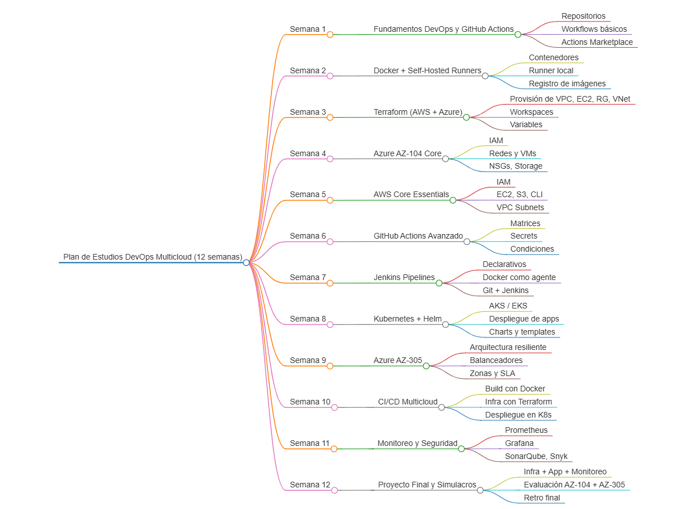

Plan de Estudios DevOps Multicloud
Explora un camino estructurado, práctico y desafiante para dominar AWS, Azure, CI/CD, Kubernetes, Terraform y más. Diseñado para impulsarte al siguiente nivel como arquitecto DevOps multicloud.
Descargar Mapa Mental 